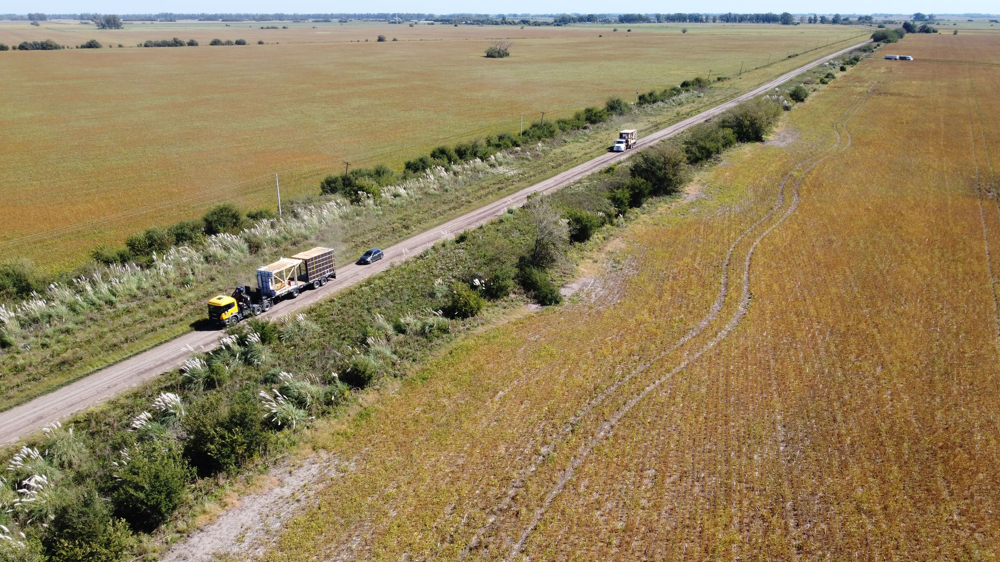

CAUH
La idea de este Proyecto surgió de una necesidad, la necesidad de documentar el traslado de una casa desde el taller donde se construyó hasta su terreno. La distancia era de 25 kilómetros por ruta y calles de tierra y el arquitecto requería tomas con cámara y tomas desde el cielo con un drone.

El mayor desafío, fue lidiar con la presión de que no había segundas oportunidades, ya que tuve que filmar a tres camiones en la ruta que no podían frenar. Sumado a que era una operación que iba a terminar en el día y tenía que enfocarme en los eventos más importantes y no podía fallar.